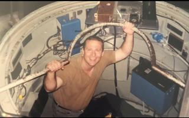
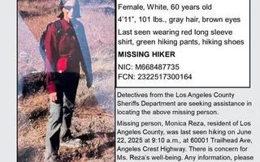
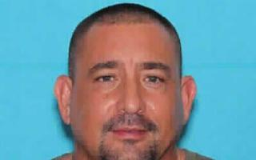
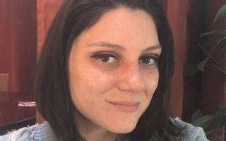
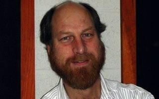
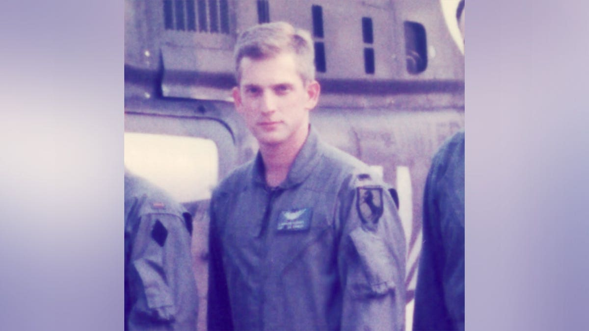
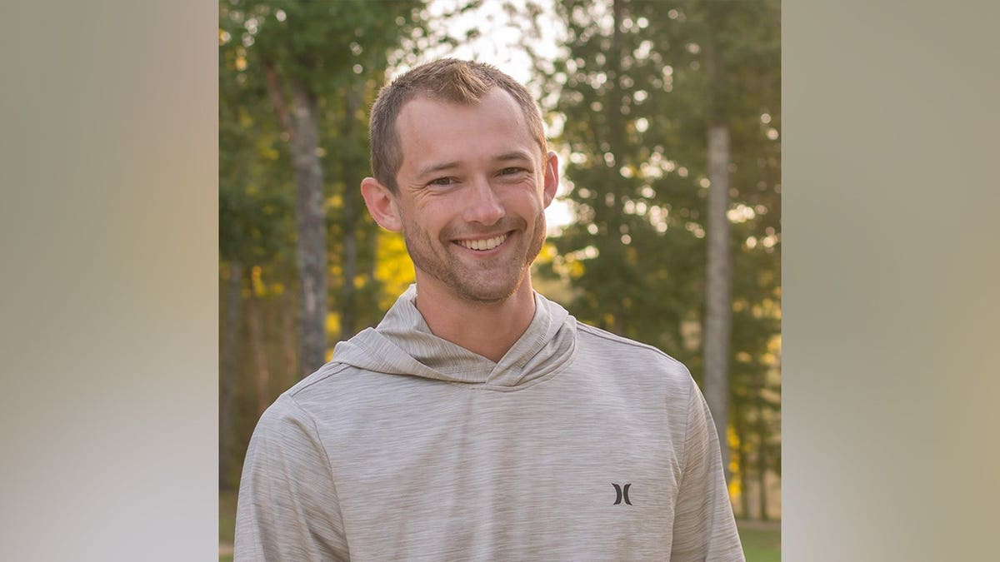

The Scientists







Recent Developments
2026
Spokesperson Bethany Stevens says NASA is “coordinating and cooperating with the relevant agencies” but pushed back on the threat framing.
Orbital Today: NASA statement →2026
Comer & Burlison demanded agency briefings by April 27. No agency has publicly indicated compliance.
House Oversight: Original demand →2026
Bernalillo County Sheriff’s Office told Newsweek the case remains active but no connection to classified work has been established.
Newsweek: Sheriff update →2026
Major newspaper confirms full-cluster FBI investigation. Wikipedia now has a dedicated “Missing scientists” article.
Boston Globe →2026
Moffatt (60), a decorated Army veteran, Naval Test Pilot School grad, NASA JSC payload specialist on 14 Space Shuttle missions, and UAH research engineer, was killed with his entire family — wife Leasa (61), son Andrew (30, UAH research engineer), and son William (28, IT security) — when their Mooney M20 crashed near Union County Airport, SC during a refueling stop. NTSB/FAA investigating. Case count now 16.
WRG News: Moffatt family crash →2026
First formal confirmation the FBI is treating cases as potentially linked rather than isolated incidents.
Fox News: FBI statement →Critical Connections
| Weight | Who | What links them | Why it matters |
|---|---|---|---|
| STRONGEST | McCasland ↔ Reza | McCasland’s AFRL funded Reza’s Mondaloy from 1999. She worked directly under his oversight. | Both vanished. The inventor and her funder — gone 8 months apart. |
| STRONGEST | Sullivan → UAP testimony | Scheduled as UAP whistleblower before Congress. Dead within 2 weeks. IC IG flagged “severe misconduct.” | Only case with direct pre-death testimony link. FBI now probing. |
| STRONGEST | McCasland → Trump UAP order | Trump signed UAP disclosure directive Feb 19. McCasland vanished 4 days later. Held legal visibility over ALL classified DoD programs. | The man who knew everything disappeared the moment disclosure was ordered. |
| STRONGEST | Wilcock → scientists warning | Posted video 2 days before death warning about missing scientists. Had publicly stated he was not suicidal. Biographer died 2 days before him. | Most prominent public disclosure figure dead, same week as congressional deadline. |
| NOTABLE | Wright-Patterson × 3 events | McCasland commanded it. Sullivan worked NASIC there. 3 AFRL personnel died Oct 2025 — no findings released. | Same base, three separate death events. Never connected by mainstream coverage. |
| NOTABLE | NM walkaway pattern | Chavez, Casias, Garcia, McCasland all left Albuquerque-area homes on foot without phones. Casias wiped devices first. | Four people, same region, same behavioral signature. |
| NOTABLE | JPL institutional silence | Hicks, Maiwald, Reza all died or vanished. NASA issued zero statements. No autopsies. No comment to press. | Institutions announce prominent deaths. Active silence warrants FOIA. |
| NOTABLE | Huntsville × 4 dead | Eskridge (2022), LeBlanc (2025), Tony Moffatt + Andrew Moffatt (2026). All aerospace/NASA-connected. All based in Huntsville, AL. | Single most concentrated location: 4 deaths, all connected to NASA or UAH aerospace research, in a city built around Redstone Arsenal. |
| CONTEXT | Mondaloy → national security | Reza’s patent freed US classified satellite launches from Russian RD-180 dependency. Now linked to SpaceX/Blue Origin. | The tech is strategically critical. Inventor and funder are both gone. |
Key Institutions & Organizations
The Three Investigative Threads
01 Foreign Intelligence Operation
- Rep. Burlison: “the most likely explanation”
- China’s MSS / Russia’s SVR documented as targeting US defense scientists
- People with irreplaceable knowledge in propulsion, nuclear, advanced aerospace
- Walkaway pattern consistent with coerced extraction
- Former FBI AD Swecker: “within the realm of possibility” researchers were abducted
- Casias phone-wipe before departing suggests premeditated counter-surveillance
02 Internal Suppression / Disclosure Threat
- Sullivan dead 2 weeks before UAP testimony — IC IG flagged misconduct
- McCasland vanished 4 days after Trump UAP disclosure order
- Wilcock dead 2 days after warning about missing scientists
- Legacy classified programs outside congressional oversight (Grusch testimony)
- Eskridge said she felt “escalating aggression” before she died
03 What the Skeptics Say
- Loureiro, Grillmair, Thomas all have mundane, unconnected explanations
- Former FBI agent Coffindaffer: “This isn’t some large-scale conspiracy”
- DOD confirmed no active national security investigations of missing persons
- Many classified researchers exist — clustering expected at scale
- Confirmation bias: we notice deaths after the pattern is proposed
- HOWEVER: Congress, FBI, NNSA, and the White House are now all treating it as real